Modelo terminado
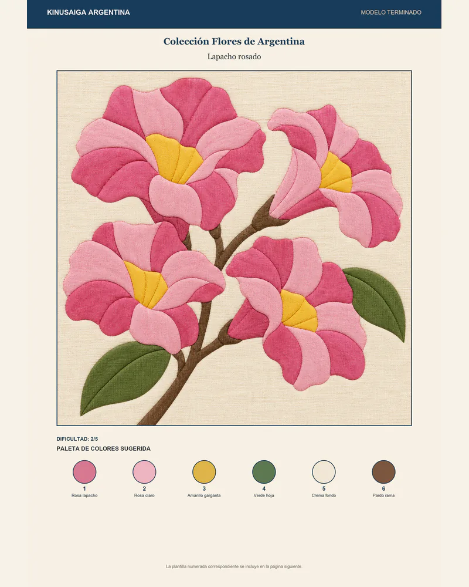
Muestra cómo puede verse la pieza final e incluye el nombre, la dificultad y la paleta sugerida con un número para cada color.
CREÁ ARTE DE UNA FORMA MUY FÁCIL Y BARATA
Aprendé kinusaiga desde cero con un método práctico, plantillas listas para imprimir y modelos terminados que te muestran qué tela colocar en cada sector.
Podés comenzar con materiales fáciles de conseguir y avanzar paso a paso hasta terminar una pieza lista para enmarcar.
Pago único mediante Mercado Pago · Impuestos incluidos · Producto digital de descarga inmediata.
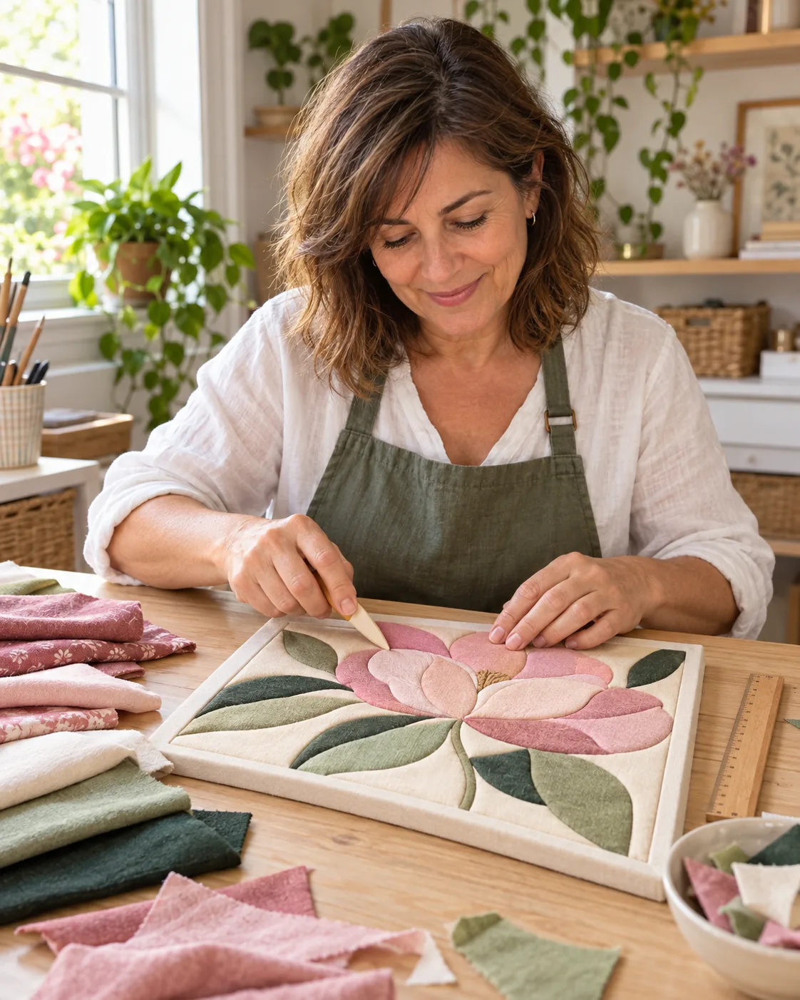
Dales un lugar visible
Tal vez tenés telas que sobraron de otros proyectos, prendas que conservás por su valor emocional o retazos que te gustan pero nunca supiste cómo aprovechar.
Con el kinusaiga podés transformarlos en cuadros textiles con relieve sin aprender costura y sin tener que crear los dibujos.
El método te indica cómo preparar la base, transferir la plantilla, cortar las ranuras y encastrar cada retazo.
Podés concentrarte en elegir las telas y disfrutar cómo la imagen va tomando forma.
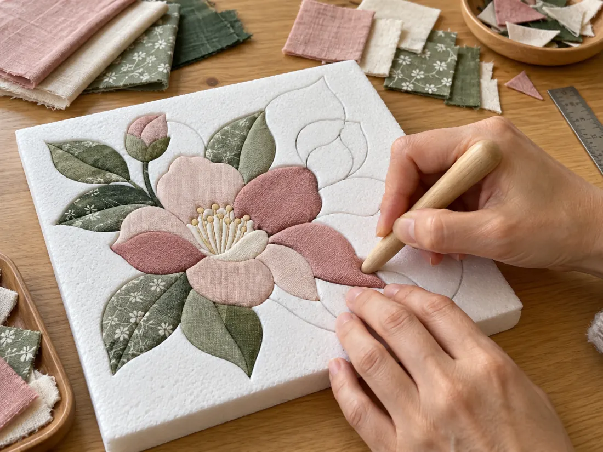
el Arte Japonés que vas a amar
No necesitás experiencia previa. Cada proyecto se realiza siguiendo una secuencia clara.
Observá el modelo terminado y su paleta de colores.
Imprimí la plantilla al 100 % y comprobá el cuadrado de control. Si no tenés impresora seguro en tu barrio hay un lugar de impresiones.
Transferí el diseño sobre una base de telgopor o foam.
Recortá cada retazo con margen e introducí sus bordes en las ranuras.
Revisá la tensión, corregí los detalles y prepará el cuadro para enmarcar.
modelo terminado y plantilla lista para usar
El modelo terminado y la plantilla imprimible representan exactamente el mismo diseño.
Modelo terminado

Muestra cómo puede verse la pieza final e incluye el nombre, la dificultad y la paleta sugerida con un número para cada color.
Plantilla numerada
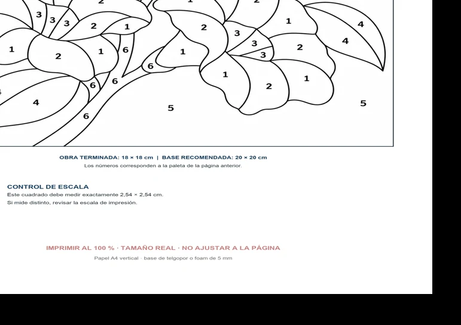
Incluye sectores cerrados, números dentro de cada región, medidas, control de escala e instrucciones de impresión.
Si una región contiene el número 3, utilizás el color identificado con el número 3 debajo de la paleta. No tenés que adivinar qué tela corresponde a cada parte.
Empezá con lo que ya tenés
La tela se fija mediante encastre. No se utiliza aguja ni máquina.
Todos los diseños están preparados para imprimir y transferir.
Podés trabajar con retazos y una base de telgopor o foam.
Cada modelo contiene una paleta vinculada con los números de la plantilla.
Los primeros proyectos desarrollan una destreza concreta por vez.
Imprimí nuevamente una plantilla y probá otra combinación de telas.
El manual explica cómo resolver las dificultades habituales del proceso.
Podés detenerte y continuar cuando quieras, sin depender de clases en vivo.
Las indicaciones incluyen terminaciones y orientación para presentar el cuadro.
Producto principal
Un manual digital de 22 páginas que explica todo el proceso necesario para realizar tu primera pieza.
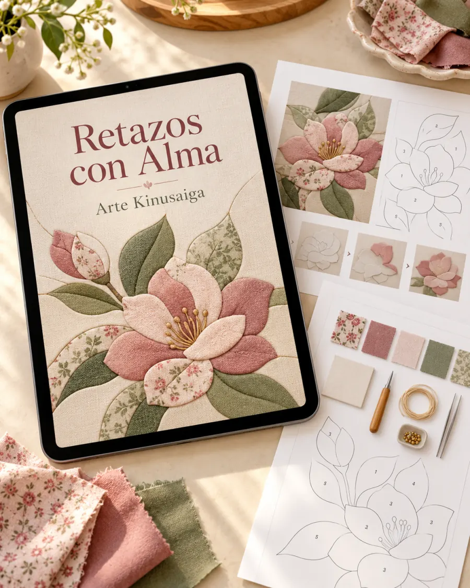
Medidas normalizadas
Las plantillas están preparadas con un sistema de medidas común:
Antes de transferir el diseño, medí el cuadrado de control. Si mide exactamente 2,54 cm, la plantilla fue impresa correctamente.
El manual también explica cómo ampliar o reducir un diseño conservando sus proporciones.
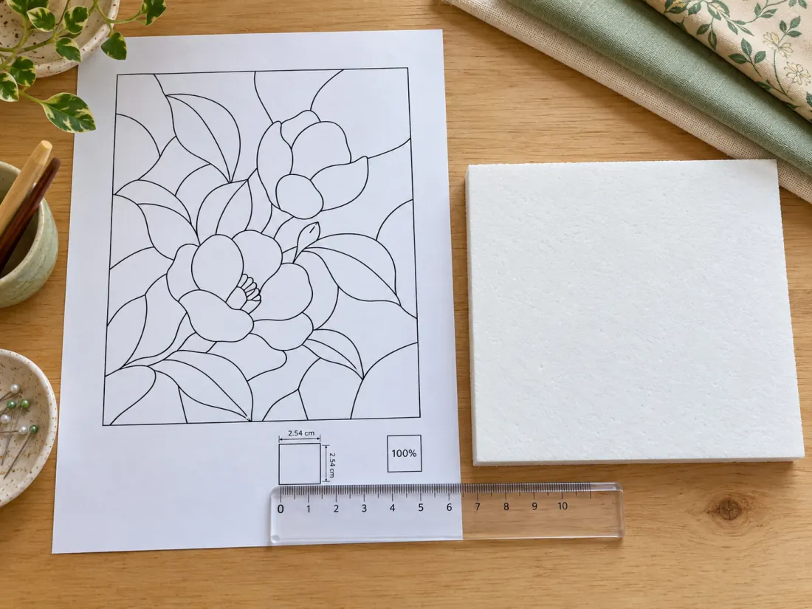
Todo organizado para seguir creando
Retazos con Alma incluye 115 diseños completos. Cada diseño tiene su modelo terminado y su plantilla imprimible correspondiente: 115 pares formados por 230 láminas A4.
Corazón geométrico, tulipán, mariposa, pájaro entre ramas y casita entre colinas.
5 diseños · 5 pares · 10 láminas A4Ocho paletas temáticas con combinaciones y criterios para sustituir colores.
8 paletasIncluye vaca, cóndor, yaguareté, carpincho, hornero y otros animales.
20 diseños · 20 pares · 40 láminas A4Incluye ceibo, jacarandá, lapacho rosado, irupé, pasionaria y otras flores.
20 diseños · 20 pares · 40 láminas A4Incluye Quebrada, Iguazú, Aconcagua, ombú pampeano, Fitz Roy y otros paisajes.
20 diseños · 20 pares · 40 láminas A4Veinte reinterpretaciones didácticas basadas en obras de dominio público.
20 diseños · 20 pares · 40 láminas A4Veinte composiciones contemporáneas de dificultad gradual.
20 diseños · 20 pares · 40 láminas A4Diez proyectos para transformar telas con valor emocional.
10 diseños · 10 pares · 20 láminas A4Precios, fotografía, presentación, ferias, canales y licencia comercial.
Guía prácticaDiseños incluidos
Una muestra de las colecciones que vas a recibir para seguir practicando.

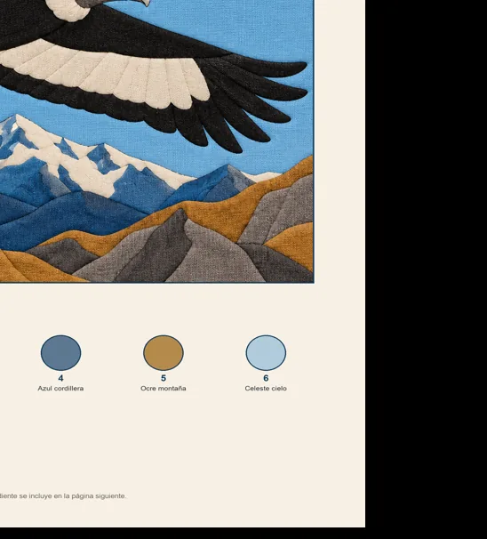
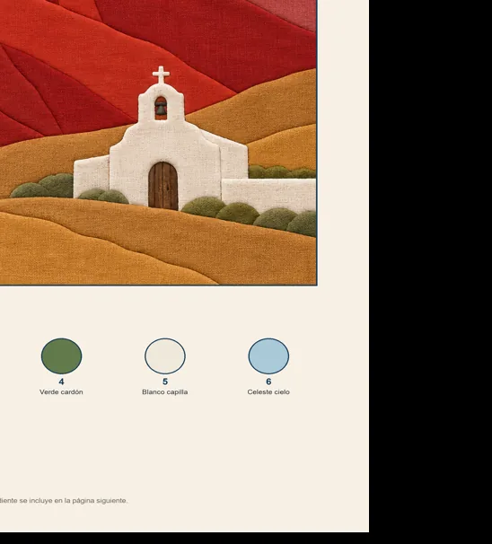
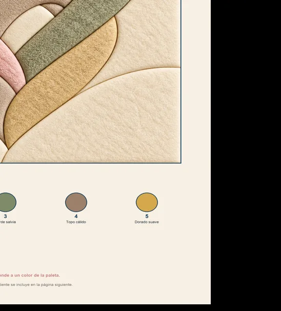
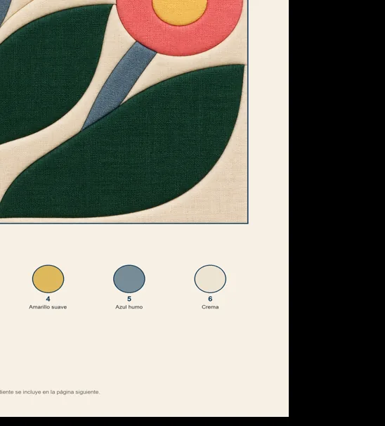
Bono 8
Una prenda de bebé, una corbata, un vestido, un uniforme o un retazo heredado pueden ocupar un lugar visible en vez de permanecer guardados.
La Colección Recuerdos te propone diez formas de transformar esas telas en cuadros con significado personal.
Cada proyecto incluye su modelo terminado, paleta y plantilla numerada.
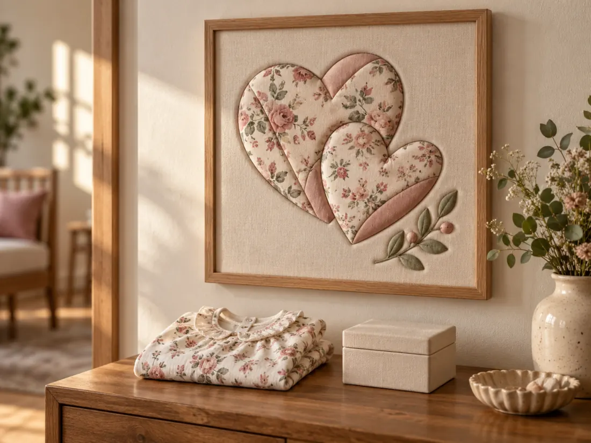
Bono 9
El Kit para Vender tu Arte reúne criterios de precio, fotografía, embalaje, presentación y canales de venta.
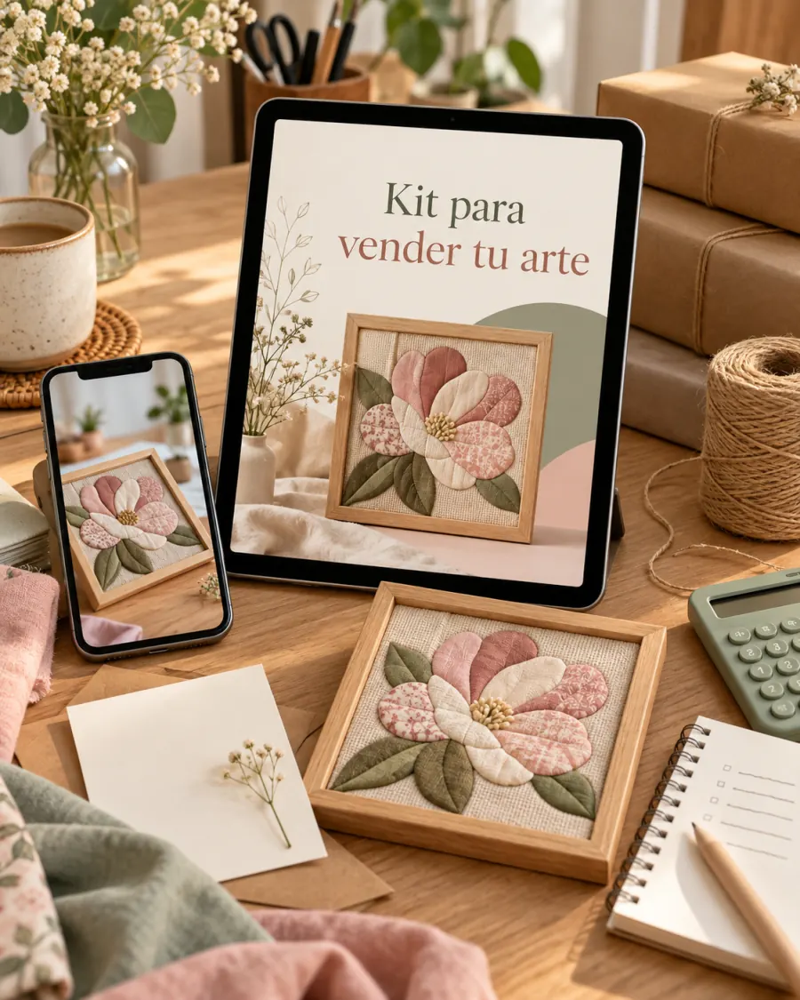
Puede ser para vos si…
No es lo indicado si…
Materiales fáciles de conseguir
Los materiales físicos no están incluidos.
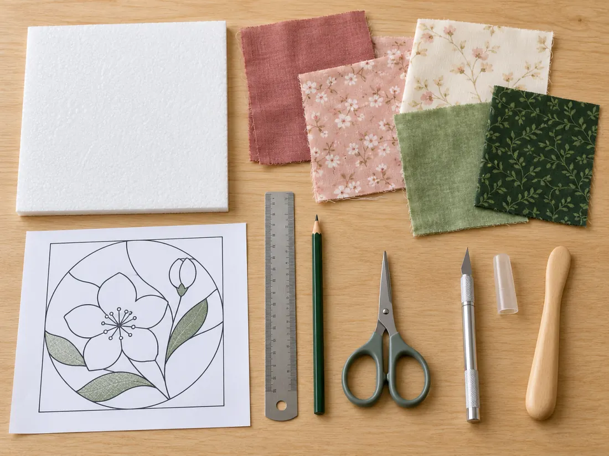
Voces del kinusaiga
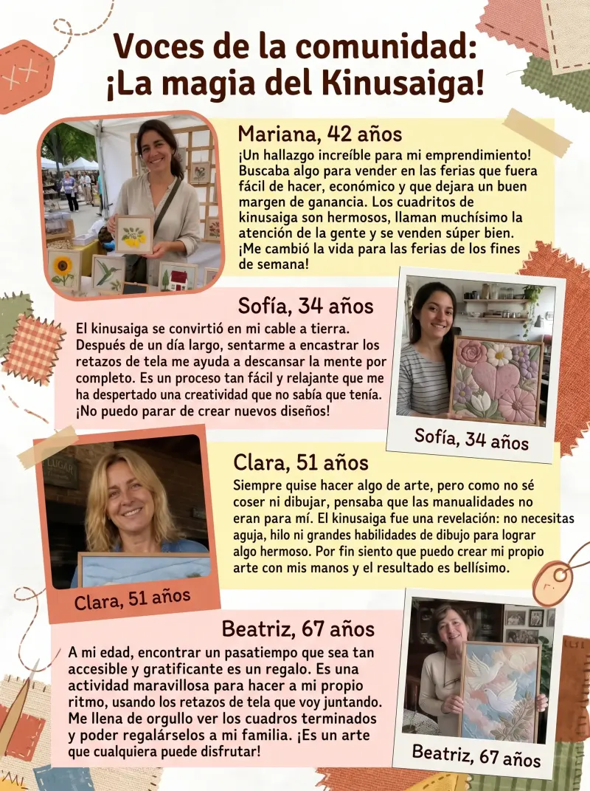
Precio de lanzamiento
Accedé al manual, 115 diseños completos y los nueve bonos en formato digital.
Pago único mediante Mercado Pago · Sin cuotas · Sin suscripción
Producto digital. No se envían telas, herramientas, bases ni materiales físicos.
Te derivamos a nuestro checkout de punto y coma store y Completás la compra mediante Mercado Pago.
Después de la acreditación llega un PDF de acceso.
El PDF contiene el enlace privado para que puedas descargar el material. No necesitás crear otra cuenta.
Garantía total
Podés solicitar una devolución total dentro de los siete días posteriores a la compra. No necesitás explicar el motivo: solo tenés que indicar que querés solicitarla.
La devolución se procesará mediante Mercado Pago utilizando el medio correspondiente a la operación original.
Preguntas frecuentes
No. El kinusaiga utiliza encastre. Los bordes de la tela se introducen en pequeñas ranuras realizadas sobre la base.
No. Recibís los diseños preparados para imprimir y transferir.
Sí. El manual comienza desde los fundamentos y el Bono Primeros Pasos organiza los primeros proyectos por dificultad.
Recibís 115 diseños completos. Cada diseño incluye su modelo terminado con paleta numerada y su plantilla imprimible correspondiente.
Los 115 diseños se entregan como pares. Cada par contiene una lámina con el modelo terminado y otra con la plantilla numerada. Por eso, 115 diseños equivalen a 230 láminas A4.
Sí. Están preparadas para una obra de 18 × 18 cm sobre una base de 20 × 20 cm. Incluyen un cuadrado de control de 2,54 cm.
Sí. El manual explica cómo calcular el porcentaje necesario para ampliar o reducir el diseño conservando sus proporciones.
No. Las paletas funcionan como guía. Podés sustituir los colores según los retazos que tengas disponibles.
Sí. Podés volver a imprimirla y realizar nuevas versiones utilizando otras telas o combinaciones.
No. Retazos con Alma es un producto digital. No incluye telas, telgopor, foam, herramientas ni marcos.
Sí. La licencia permite vender las piezas físicas terminadas dentro de las condiciones indicadas.
El acceso es de por vida. Podés descargar y conservar los archivos.
Sí. Las actualizaciones y los nuevos diseños que se incorporen a este producto estarán disponibles sin costo adicional.
Después de acreditarse el pago recibís un correo con un PDF de acceso y el enlace privado de descarga.
Revisá las carpetas de correo no deseado y promociones. Si no aparece, escribí a puntoycomastore.fq@gmail.com indicando los datos utilizados durante la compra.
Retazos con Alma
Tenés el método, las medidas, los modelos y las plantillas preparados para comenzar desde cero.
Recibís 115 diseños completos y 230 láminas A4, además del manual y los nueve bonos.
Mercado Pago · Acceso de por vida · Garantía de 7 días